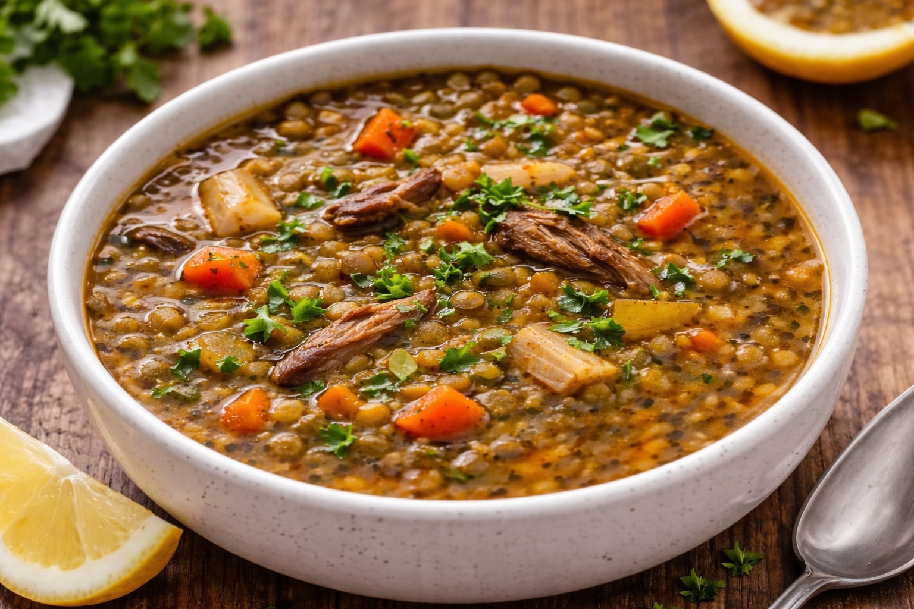

Whole Foods Recipes: Classic Green Lentil Soup
Last updated: February 26, 2026

A large-batch lentil soup that is simple, filling, and repeatable—built from whole ingredients and finished with lemon and parsley for clarity and balance.
Key takeaways
- Build a strong base — sauté onion, celery, and carrots before adding liquid.
- Use ~12 cups total liquid — broth for richness, water for balance (both work).
- Low simmer wins — lentils get tender without drama; add water if it thickens.
- Finish with lemon + parsley — brightness and freshness transform the bowl.
- Dark chicken at the end (optional) — adds richness and makes it a complete meal.
Ingredients (full batch)
- 1 lb (16 oz) green lentils, rinsed
- 3 tbsp olive oil
- 1 large yellow onion, diced
- ~5 ribs celery, chopped
- ~18 baby carrots, chopped
- 3 tsp minced garlic
- ~12 cups total liquid (broth + water combination)
- 1½ cups cooked dark chicken (optional)
- Juice of ½ lemon
- Fresh parsley, chopped
- Salt + black pepper to taste
Method
- Heat olive oil over medium. Add onion, celery, and carrots. Cook 5–7 minutes until softened.
- Add garlic and cook 30–60 seconds.
- Add lentils and liquid. Bring to gentle boil, then reduce to steady simmer.
- Simmer 45–60 minutes. Add water if it thickens.
- Add cooked chicken in final 5–10 minutes (optional).
- Finish with lemon and parsley. Adjust salt if needed.
Storage
- Refrigerate up to 5 days.
- Freezes well.
- Add water when reheating if thickened.
Personal note
This was the most delicious soup I’ve ever made. Simple ingredients, dark chicken at the right time, and a slow simmer made all the difference.
Next steps
Continue with more Whole Food Cooking.
This article focuses on general food quality and cooking with quality ingredients, not medical advice.